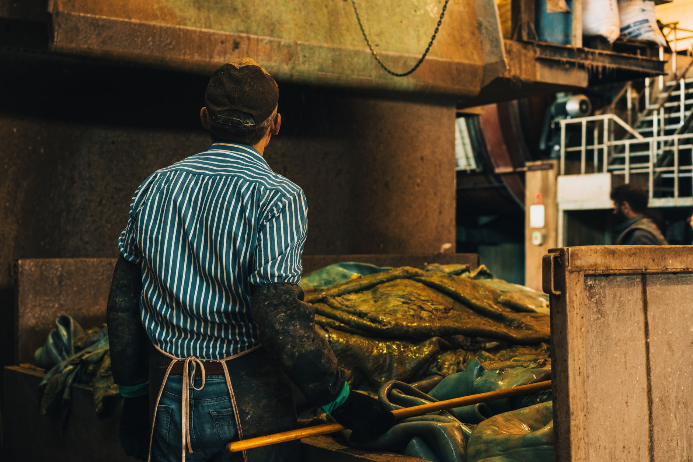

음극재 中 점유율 96%…K배터리 소재 위기 심화

한국 배터리 산업의 핵심 소재 중 하나인 음극재 분야에서 중국 기업들의 글로벌 시장 점유율이 96%에 육박한다는 통계가 공개되면서 국내 공급망 취약성에 대한 우려가 커지고 있다. 음극재는 배터리 충방전 시 리튬이온을 저장하는 소재로, 에너지 밀도와 충전 속도를 결정하는 핵심 부품이다.
음극재 시장에서 중국의 압도적 지위는 흑연 원료에서 가공·생산까지 수직 통합된 공급망에 기인한다. BTR, 상하이시노펙, 국헌첨단소재 등 중국 음극재 기업들은 저렴한 원가와 대규모 생산 능력을 앞세워 글로벌 시장을 장악하고 있다. 전 세계 배터리급 천연흑연 생산의 약 70%도 중국에서 나온다.
국내에서는 포스코퓨처엠이 천연흑연과 인조흑연 음극재 모두를 생산하는 유일한 종합 음극재 기업이지만, 글로벌 시장에서의 비중은 아직 미미한 수준이다. 음극재 시장에서의 중국 의존도가 96%에 달한다는 수치는 중국이 수출을 통제할 경우 한국 배터리 산업 전체가 직격탄을 맞을 수 있음을 의미한다.
포스코퓨처엠은 LFP(리튬인산철) 배터리용 양극재와 음극재 사업을 동시에 확장하고 있다. 최근 LFP 양극재 생산을 위한 신규 투자를 단행했지만, 늘어난 차입금이 재무 부담으로 작용하고 있다는 지적도 나온다. 회사 측은 '중장기 성장을 위한 선제적 투자'라는 입장을 고수하고 있다.
음극재의 소재 공급망 취약성은 단순한 시장 점유율 문제가 아니다. 중국이 흑연을 전략 자원으로 지정하고 수출 허가제를 운영하고 있어, 지정학적 긴장이 고조될 경우 공급 차단 리스크가 현실화될 수 있다. 실제로 중국은 최근 여러 광물과 소재에 대한 수출 통제를 강화하는 추세를 보이고 있다.
국내 배터리 기업들은 음극재 공급처 다변화를 위해 아프리카, 캐나다, 브라질 등지의 흑연 광산 확보에 나서고 있다. 그러나 흑연 광산 개발에서 가공·전극 소재 생산까지 이르는 밸류체인을 구축하는 데는 상당한 시간과 투자가 필요해 단기간 내 문제 해결은 어렵다는 시각이 지배적이다.
실리콘 음극재가 대안으로 주목받고 있다. 실리콘은 흑연 대비 이론 에너지 밀도가 10배 이상 높아 차세대 음극재로 각광받고 있으며, 중국 의존도도 흑연보다 낮다. 국내 소재 기업들도 실리콘 음극재 개발에 박차를 가하고 있으나, 팽창·수축 문제를 극복하는 기술적 과제가 남아있다.
전고체 배터리 기술도 음극재 지형을 바꿀 수 있는 변수다. 최근 초저압 구동에 성공했다는 연구 성과가 발표되는 등 전고체 배터리 상용화 가능성이 점차 높아지고 있으며, 이 경우 흑연 대신 리튬 금속 음극재가 주류가 될 수 있다. 중장기적으로 흑연 음극재 의존도를 낮출 구조적 전환점이 될 수 있다는 기대도 있다.
업계 관계자는 '중국의 흑연 공급 통제 리스크는 현실적이고 심각한 위협'이라며 '정부와 기업이 공동으로 음극재 공급망 내재화 로드맵을 빠르게 실행에 옮겨야 한다'고 강조했다. 소재 공급망의 취약성이 배터리 산업 경쟁력 전체를 갉아먹을 수 있다는 경고다.
정부는 배터리 소재 공급망 강화를 위해 핵심광물 비축 확대와 해외 광산 개발 지원, 국내 대체 소재 R&D 지원을 병행하고 있다. 특히 흑연을 국가 핵심 전략 광물로 지정하고 비축 물량을 늘리는 방안을 검토 중인 것으로 알려졌다.
음극재 공급망 문제는 한국만의 과제가 아니다. 미국, 유럽, 일본 등 주요국도 흑연 음극재의 중국 의존도를 낮추기 위한 공급망 다변화 정책을 추진하고 있다. 미국은 인플레이션 감축법(IRA)의 핵심 광물 조항을 통해 중국산 흑연이 포함된 배터리에 대한 보조금 지급을 제한하는 방향으로 제도를 정비하고 있다.
음극재 국산화와 공급 다변화는 장기적 투자와 정책 지원이 수반되어야 하는 구조적 과제다. 현재의 96% 중국 의존도를 단기간 내에 낮추는 것은 현실적으로 불가능하지만, 지금 시작하지 않으면 격차가 더욱 벌어질 수 있다. 소재 경쟁력이 곧 배터리 산업의 미래를 결정하는 시대다.